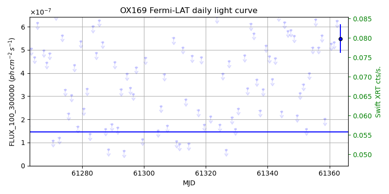

LAT Lightcurve site: https://fermi.gsfc.nasa.gov/ssc/data/access/lat/msl_lc/source/OX_169
Swift site: https://www.swift.psu.edu/monitoring/source.php?source=S32141+17
NED: Query
Time of last update of this page: UT: 2026-11-28 16:28 (MJD: 61372.686)
| Property | Value |
|---|---|
| R.A. | 21:43:35.52 |
| Dec. | 17:43:48.0 |
| z | 0.211 |
| 3FGL SpectrumType | LogParabola |
| 3FGL PL Index | |
| 3FGL Flux_100_300000 | 1.46e-07 1 / (s cm2) |
| 3FGL Flux_1000_300000 | 5.15e-09 1 / (s cm2) |
| 3FGL Flux >200 GeV | 5.61e-13 1 / (s cm2) |
| 3FGL Extrap. Crab >200 GeV | 0.00 |
| 3FGL Flux After EBL Absorption >200GeV | 3.06e-13 1 / (s cm2) |
| 3FGL EBL Crab Fraction >200GeV | 0.00 |

| MJD | dMJD | Flux | dFlux | Frac3FGL | FracCrab>200GeV | EBLFracCrab>200GeV |
|---|---|---|---|---|---|---|
| 61367.50 | 0.50 | 5.58e-07 | 0.00e+00 | 0.00 | 0.00 | 0.00 |
| 61368.50 | 0.50 | 2.60e-07 | 0.00e+00 | 0.00 | 0.00 | 0.00 |
| 61369.50 | 0.50 | 5.77e-07 | 0.00e+00 | 0.00 | 0.00 | 0.00 |
| 61370.50 | 0.50 | 4.41e-07 | 0.00e+00 | 0.00 | 0.00 | 0.00 |
| 61371.50 | 0.50 | 2.42e-07 | 0.00e+00 | 0.00 | 0.00 | 0.00 |
| MJD | dMJD | Flux | dFlux | Frac3FGL | FracCrab>200GeV | EBLFracCrab>200GeV |
|---|---|---|---|---|---|---|
| 61335.50 | 3.50 | 1.60e-07 | 5.19e-08 | 1.09 | 0.00 | 0.00 |
| 61342.50 | 3.50 | 2.65e-07 | 0.00e+00 | 0.00 | 0.00 | 0.00 |
| 61349.50 | 3.50 | 2.15e-07 | 0.00e+00 | 0.00 | 0.00 | 0.00 |
| 61356.50 | 3.50 | 2.39e-07 | 6.04e-08 | 1.64 | 0.00 | 0.00 |
| 61363.50 | 3.50 | 2.66e-07 | 5.51e-08 | 1.82 | 0.00 | 0.00 |

| MJD | dMJD | Flux | dFlux | Frac3FGL | FracCrab>200GeV | EBLFracCrab>200GeV |
|---|---|---|---|---|---|---|
| 61367.50 | 0.50 | 4.82e-08 | 0.00e+00 | 0.00 | 0.00 | 0.00 |
| 61368.50 | 0.50 | 3.06e-08 | 0.00e+00 | 0.00 | 0.00 | 0.00 |
| 61369.50 | 0.50 | 2.72e-08 | 0.00e+00 | 0.00 | 0.00 | 0.00 |
| 61370.50 | 0.50 | 3.92e-08 | 0.00e+00 | 0.00 | 0.00 | 0.00 |
| 61371.50 | 0.50 | 1.23e-08 | 0.00e+00 | 0.00 | 0.00 | 0.00 |

| MJD | dMJD | Flux | dFlux | Frac3FGL | FracCrab>200GeV | EBLFracCrab>200GeV |
|---|---|---|---|---|---|---|
| 61335.50 | 3.50 | 1.78e-08 | 0.00e+00 | 0.00 | 0.00 | 0.00 |
| 61342.50 | 3.50 | 7.62e-09 | 0.00e+00 | 0.00 | 0.00 | 0.00 |
| 61349.50 | 3.50 | 1.44e-08 | 0.00e+00 | 0.00 | 0.00 | 0.00 |
| 61356.50 | 3.50 | 1.73e-08 | 0.00e+00 | 0.00 | 0.00 | 0.00 |
| 61363.50 | 3.50 | 7.17e-09 | 0.00e+00 | 0.00 | 0.00 | 0.00 |
--------------------------------------------------------- Using user-supplied coords: 21:43:35.52 17:43:48.0 2000 --------------------------------------------------------- FLWO UT night of: 2026-11-29 Local Sid. @ Midnight: 04:08 Sunset (-15.0) (local, UT): 18:31 01:31 Sunrise (-15.0) (local, UT): 05:53 12:53 Moonrise (local, UT): 21:57 04:57 Moonset (local, UT): Moon phase: 0.72 --------------------------------------------------------- AzTime LSID UT Obj_el Obj_az Mn_el Mn_az Sep. --------------------------------------------------------- 18:31 22:39 01:31 71.5 224.9 -32.9 32.1 140.8 19:01 23:09 02:01 66.4 239.1 -29.4 38.9 141.0 19:31 23:39 02:31 60.7 248.7 -25.4 45.0 141.2 20:01 00:09 03:01 54.6 255.8 -21.0 50.6 141.4 20:31 00:39 03:31 48.3 261.3 -16.2 55.6 141.6 21:01 01:09 04:01 42.0 266.0 -11.1 60.2 141.8 21:31 01:39 04:31 35.6 270.1 -5.4 64.5 142.0 22:01 02:09 05:01 29.2 273.9 0.4 68.5 142.1 22:31 02:39 05:31 22.8 277.6 5.8 72.2 142.3 23:01 03:10 06:01 16.5 281.1 11.6 75.8 142.5 23:31 03:40 06:31 10.3 284.8 17.5 79.4 142.6 00:01 04:10 07:01 4.3 288.5 23.6 82.9 142.8 00:31 04:40 07:31 -1.0 292.4 29.7 86.5 142.9 01:01 05:10 08:01 -7.7 296.6 35.8 90.3 143.0 01:31 05:40 08:31 -13.3 301.1 42.0 94.4 143.2 02:01 06:10 09:01 -18.7 306.1 48.1 99.1 143.3 02:31 06:40 09:31 -23.6 311.6 54.2 104.7 143.5 03:01 07:10 10:01 -28.2 317.7 60.1 111.7 143.6 03:31 07:40 10:31 -32.2 324.6 65.6 121.1 143.7 04:01 08:10 11:01 -35.6 332.2 70.5 134.7 143.9 04:31 08:40 11:31 -38.2 340.5 74.0 154.7 144.0 05:01 09:11 12:01 -39.8 349.5 75.2 181.1 144.2 05:31 09:41 12:31 -40.5 358.8 73.6 206.8 144.3 05:53 10:02 12:53 -40.3 5.6 71.0 221.2 144.4 --------------------------------------------------------- Dark hours >55 deg.: 1.47 srcstart (UT): 2026-11-29 01:31 srcend (UT): 2026-11-29 02:59